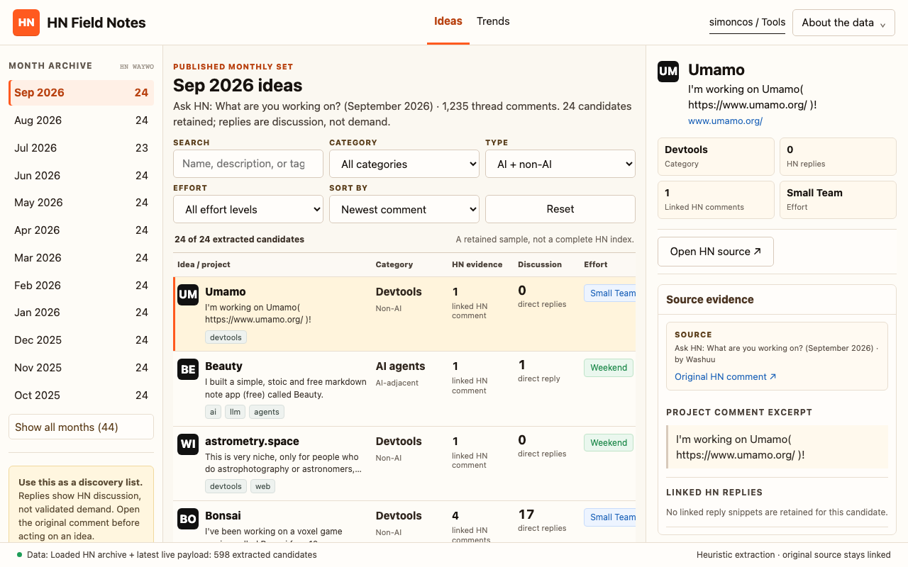
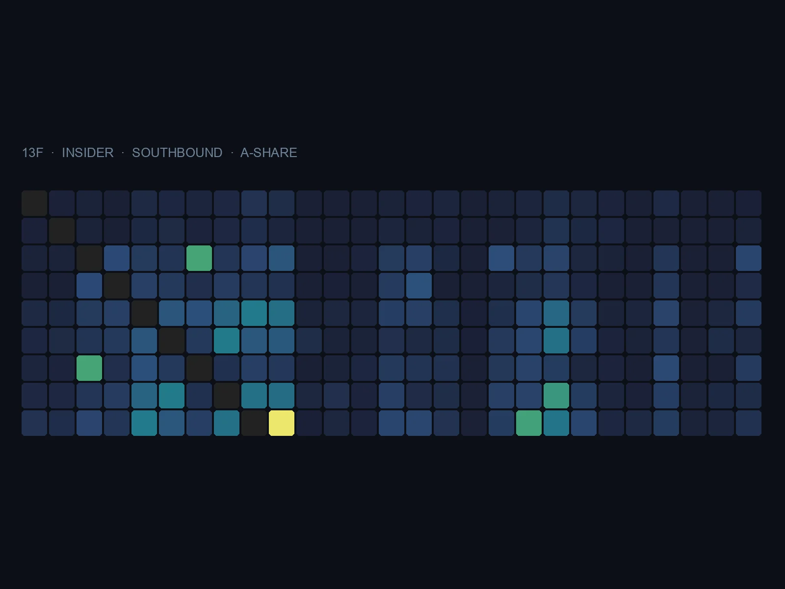
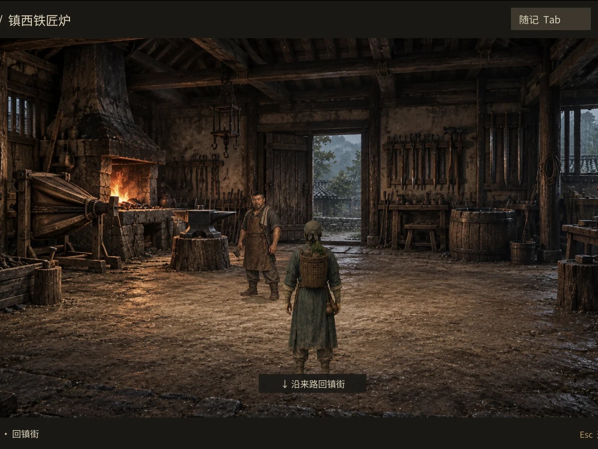
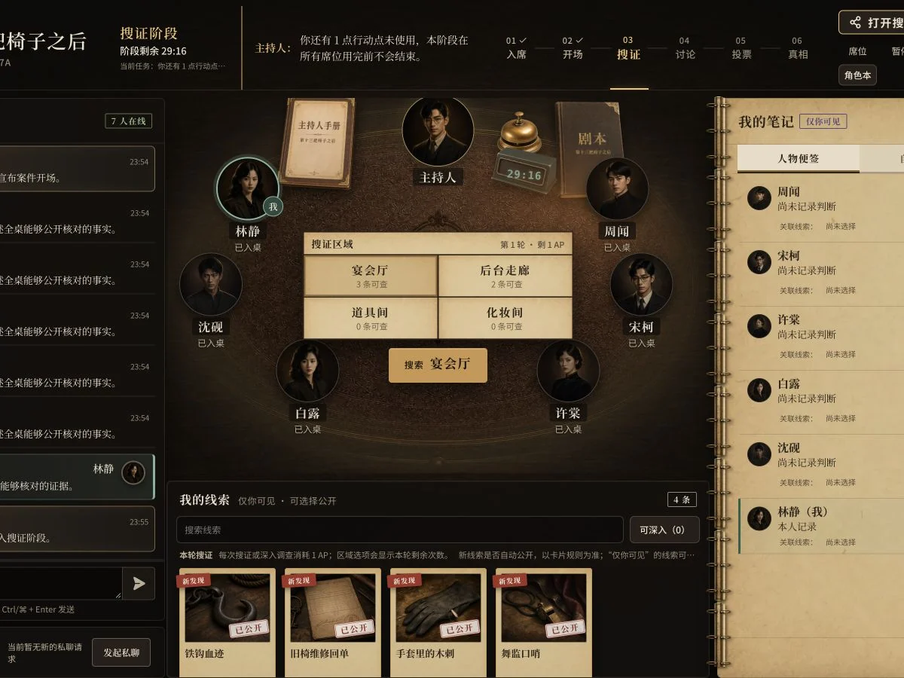
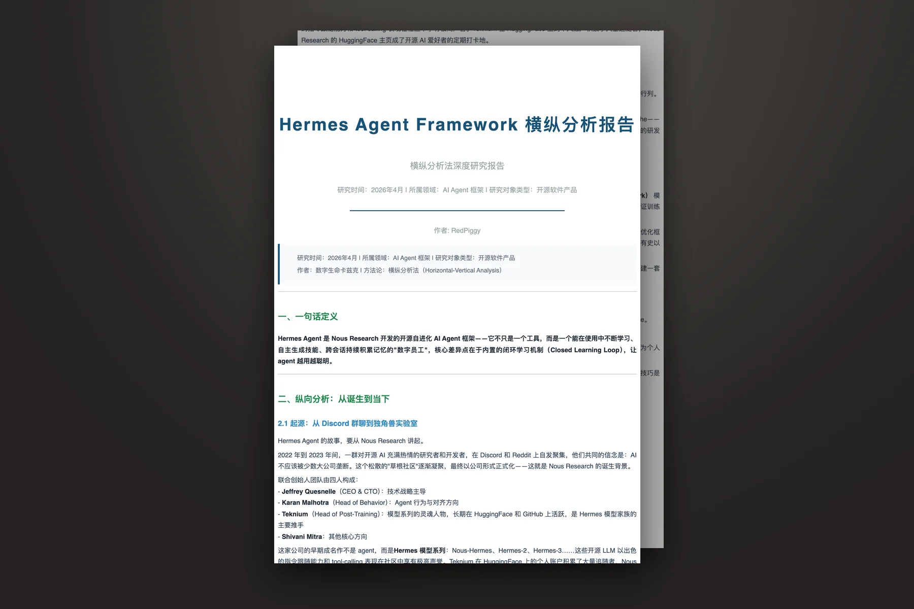
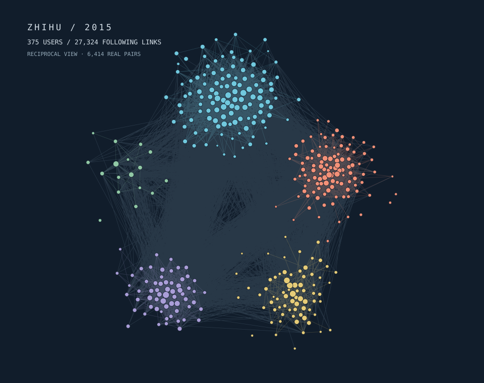

Work作品
App应用
Apps I've made.我做的应用。
01 / 05
01 / 05
App应用
Apps I've made.我做的应用。

HN Field NotesProjects from Hacker News's monthly "What are you working on?" threads: browse by category, see trends, with the original posts and replies.Hacker News 每月「你在做什么」帖里的项目：按类别浏览、看趋势，附原帖和讨论。2026 HN × LLM: Model Releases and DiscussionHN × LLM：模型发布与讨论Explore how Hacker News discusses model releases across 14 AI companies, with source threads and coverage limits. An ongoing study.追踪 Hacker News 对 14 家 AI 公司模型发布的讨论，查看原帖、讨论关联与覆盖范围。研究持续进行中。2026
HN × LLM: Model Releases and DiscussionHN × LLM：模型发布与讨论Explore how Hacker News discusses model releases across 14 AI companies, with source threads and coverage limits. An ongoing study.追踪 Hacker News 对 14 家 AI 公司模型发布的讨论，查看原帖、讨论关联与覆盖范围。研究持续进行中。2026
 Sleep ToolkitOne SleepCycle CSV in; JSON, an interactive report, and a PDF out.进一份 SleepCycle CSV，出 JSON、交互式报告和 PDF。2026
Sleep ToolkitOne SleepCycle CSV in; JSON, an interactive report, and a PDF out.进一份 SleepCycle CSV，出 JSON、交互式报告和 PDF。2026
In progress在做

Stock WatchdogWatches A-share closes, southbound flows into Hong Kong and US public filings (13F, insider trades). Refreshes daily; research only, no trading.盯 A 股收盘、港股通南向资金和美股公开披露（13F、内部人交易），每天自动更新。只做研究，不下单。2026 · In progress在做 Daily OracleDraw a card each day, do the small real-world thing it asks, and log it. Over time a garden and a card collection fill up.每天抽一张卡，去现实里做一件小事，回来记下。日子久了，花园和卡册会慢慢长满。2026 · In progress在做
Daily OracleDraw a card each day, do the small real-world thing it asks, and log it. Over time a garden and a card collection fill up.每天抽一张卡，去现实里做一件小事，回来记下。日子久了，花园和卡册会慢慢长满。2026 · In progress在做 Vocal CoachA phone app for singing in tune: measure your range, sing to target notes, and see live whether you are sharp or flat.练音准的手机应用：测音域，跟着目标音唱，实时看自己偏高还是偏低。2026 · In progress在做
Vocal CoachA phone app for singing in tune: measure your range, sing to target notes, and see live whether you are sharp or flat.练音准的手机应用：测音域，跟着目标音唱，实时看自己偏高还是偏低。2026 · In progress在做 Hiking Planner徒步规划器Import a route, read it segment by segment (distance, climb, resupply), plan the trip, and log it afterwards.导入路线，按分段看距离、爬升和补给，排好行程，走完再记一笔。2026 · In progress在做
Hiking Planner徒步规划器Import a route, read it segment by segment (distance, climb, resupply), plan the trip, and log it afterwards.导入路线，按分段看距离、爬升和补给，排好行程，走完再记一笔。2026 · In progress在做 Paper Research PlatformAsk the same questions of a stack of papers. A model answers each with quoted evidence; you check the answers and export a workbook.给一批论文提同一组问题，模型逐篇作答并附原文证据，人工核对后导出成表。2026 · In progress在做
Paper Research PlatformAsk the same questions of a stack of papers. A model answers each with quoted evidence; you check the answers and export a workbook.给一批论文提同一组问题，模型逐篇作答并附原文证据，人工核对后导出成表。2026 · In progress在做Games游戏
Games I've made.我做的游戏。

In progress在做

The Midnight Ledger三更账A wuxia RPG prototype: walk the inn and the roads around it, question people, pin clues to a board, and confront the suspect.武侠 RPG 原型：在醉仙楼一带走动、问话、收集线索，把线索摆上线索板，当面对质。2026 · In progress在做
Murder Mystery Table谜案圆桌A murder mystery for one player: pick a script and a seat, and an AI host and AI players take you through the search, the discussion, the vote and the reveal.一个人也能玩的剧本杀：选好剧本和角色，AI 主持人和其他角色陪你搜证、讨论、投票、复盘。2026 · In progress在做Talks演讲
Talks given in person, published with their HTML slides.线下做过的分享，连同 HTML 幻灯片一起发布。
Research研究
Questions I was curious about, worked through with data and sources.用数据和资料，回答一些我好奇的问题。

Hermes Agent HV Analysis (in Chinese)Hermes Agent 横纵分析A horizontal-vertical analysis of Hermes Agent, Nous Research's open-source agent framework: where it came from, and how it compares with its peers.Nous Research 的开源 Agent 框架 Hermes 的横纵分析：纵向看它从哪来，横向和同类框架比。2026 Ten Years of Sleep Records, Analyzed十年睡眠档案：数据分析A study of 3,656 nights: sleep rhythms, the body, and changes across a decade.从 3,656 个夜晚的记录，研究十年的睡眠节律、身体与生活变化。2026
Ten Years of Sleep Records, Analyzed十年睡眠档案：数据分析A study of 3,656 nights: sleep rhythms, the body, and changes across a decade.从 3,656 个夜晚的记录，研究十年的睡眠节律、身体与生活变化。2026

Zhihu 2015: People, Connections and Influence知乎 2015：人、关注与影响力Zhihu's 2015 follow network, interactive: who follows whom, mutual follows, structural groups, and influence.2015 年知乎关注网络的交互版：谁关注谁、互关、结构分组和影响力。2015Music音乐
Original songs, published with the recording and the lyrics.原创歌曲，连同录音和歌词一起发布。